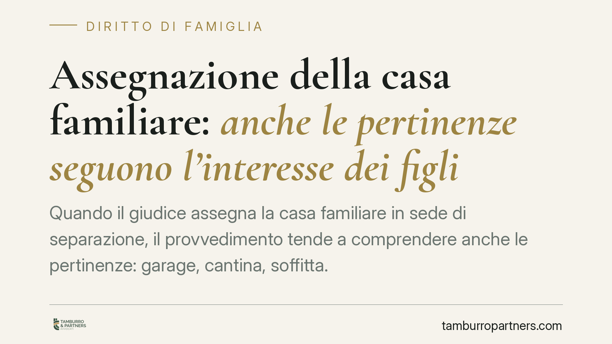

Assegnazione della casa familiare: anche le pertinenze seguono l'interesse dei figli
Quando il giudice assegna la casa familiare in sede di separazione, il provvedimento tende a comprendere anche le pertinenze: garage, cantina, soffitta. L'orientamento della giurisprudenza di legittimità àncora questa estensione a un criterio unico, l'interesse dei figli previsto dall'art. 337-sexies c.c. Spieghiamo cosa significa in concreto per chi affronta una separazione e come incide sui rapporti patrimoniali tra i coniugi.

Il fatto
La domanda ricorrente è semplice: l'assegnazione della casa familiare comprende automaticamente anche gli spazi accessori, come box, cantina o posto auto? La questione tocca da vicino il genitore collocatario dei figli e l'altro coniuge, specie quando quelle pertinenze hanno un valore economico non trascurabile.
La giurisprudenza di legittimità ha più volte affermato che l'assegnazione della casa familiare risponde esclusivamente alla tutela dei figli e della continuità del loro ambiente di vita. Su questa linea si colloca la lettura che estende il medesimo criterio anche alle pertinenze.
Inquadramento normativo
La disposizione centrale è l'art. 337-sexies del codice civile. La norma stabilisce che il godimento della casa familiare è attribuito tenendo prioritariamente conto dell'interesse dei figli. Non è un premio per il coniuge economicamente più debole né uno strumento di compensazione tra i due: è una misura a protezione della prole.
Sul concetto di pertinenza intervengono gli artt. 817 e 818 c.c. L'art. 817 definisce pertinenze le cose destinate in modo durevole al servizio o all'ornamento di un'altra cosa. L'art. 818 enuncia il principio per cui gli atti che riguardano la cosa principale comprendono anche le pertinenze, salvo diversa disposizione (*accessorium sequitur principale*).
È opportuno un chiarimento. L'estensione dell'assegnazione alle pertinenze non è scritta testualmente nell'art. 337-sexies: è una lettura giurisprudenziale che combina il criterio dell'interesse dei figli con la regola di accessorietà degli artt. 817-818 c.c. Il garage o la cantina, cioè, seguono la sorte della casa quando sono funzionali all'abitazione e al suo normale utilizzo da parte del nucleo.
Un punto spesso frainteso: godimento non è proprietà
L'assegnazione della casa familiare attribuisce un diritto personale di godimento, non la proprietà del bene. Il coniuge assegnatario può abitare l'immobile e usarne le pertinenze, ma non ne diventa titolare. La proprietà resta a chi la deteneva prima: può essere di uno solo dei coniugi, di entrambi in comunione o persino di terzi.
Questa distinzione ha conseguenze concrete. L'assegnazione non trasferisce diritti reali, non incide sulla titolarità e, di regola, viene meno al venir meno dei presupposti (ad esempio quando i figli raggiungono l'autonomia economica o lasciano stabilmente l'abitazione).
Implicazioni pratiche
Per il genitore collocatario l'estensione alle pertinenze significa poter contare su garage, cantina e spazi accessori utili alla gestione quotidiana del nucleo, senza doverli negoziare separatamente.
Per l'altro coniuge comporta che tali spazi, pur restando eventualmente di sua proprietà, saranno sottratti al proprio uso per tutta la durata dell'assegnazione. È un elemento che pesa nella valutazione complessiva dei rapporti economici tra le parti.
Resta fermo il limite: il criterio è e rimane l'interesse dei figli. Valutazioni di altra natura — esigenze abitative autonome del coniuge, convenienza economica, equilibri patrimoniali — non possono fondare da sole l'assegnazione della casa o delle sue pertinenze.
Cosa fare in concreto
- Verifica il titolo di proprietà dell'immobile e delle singole pertinenze: accertati se garage, cantina e posto auto risultano catastalmente autonomi o accessori all'abitazione principale.
- Documenta la destinazione d'uso delle pertinenze rispetto alle esigenze dei figli: la funzionalità all'abitazione familiare è il presupposto dell'estensione.
- Chiedi che il provvedimento sia esplicito sull'oggetto dell'assegnazione, indicando con precisione quali pertinenze vi rientrano, per evitare contestazioni successive.
- Distingui con chiarezza godimento e proprietà nelle condizioni di separazione: un diritto di abitazione non equivale a un trasferimento del bene.
- È opportuno coordinare le decisioni sull'assegnazione con l'assetto patrimoniale complessivo, poiché l'uso delle pertinenze può incidere sulla gestione dei beni comuni nella fase di liquidazione.
---
*Contributo informativo a cura di Tamburro & Partners Avvocati. Non costituisce parere legale.*
Ogni famiglia ha il suo equilibrio.
Separazione, divorzio, affidamento, assegno: se vuoi un confronto riservato su una specifica situazione, scrivi allo studio. Ti rispondiamo entro un giorno lavorativo.